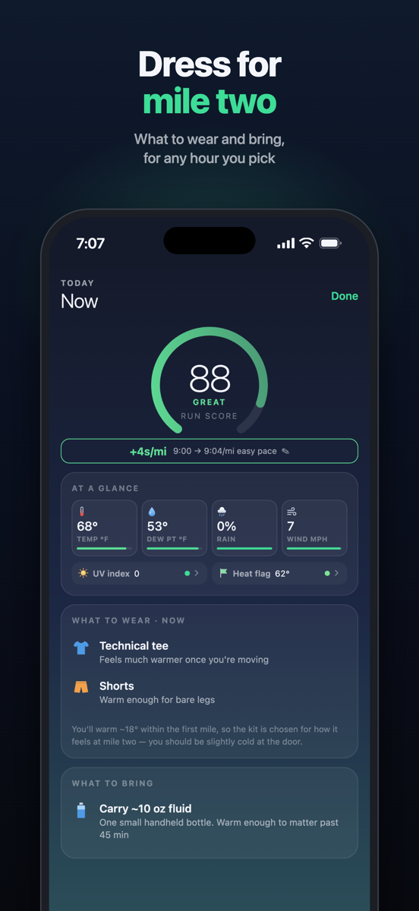
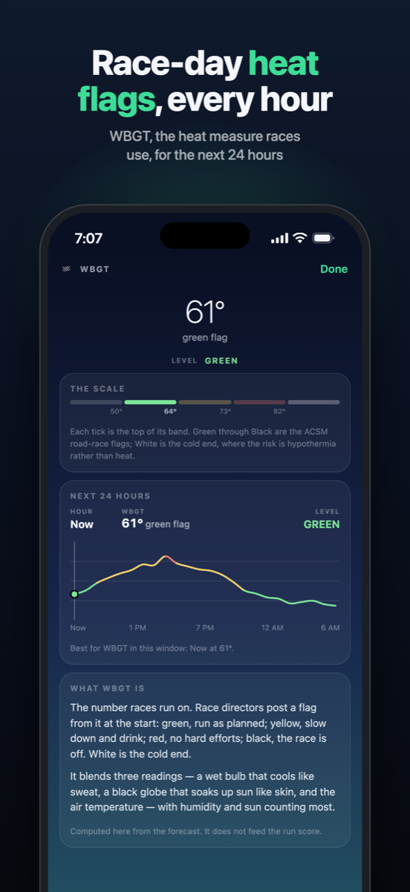
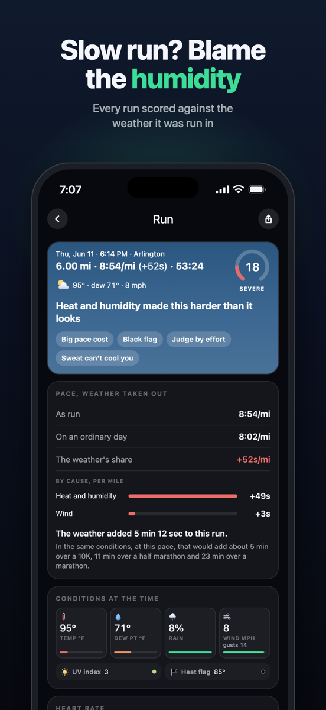
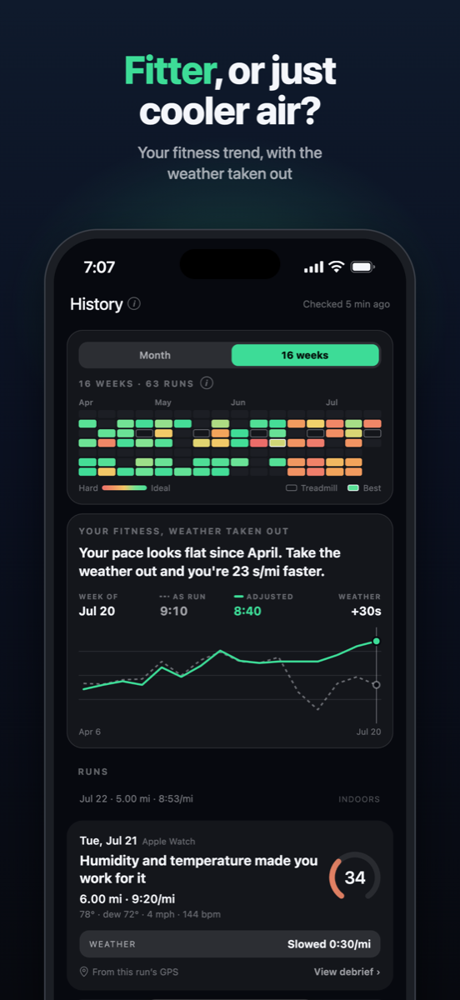
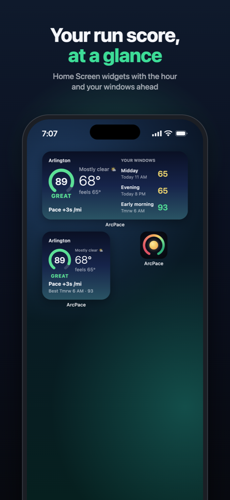

Every hour, scored
Know your best hour. Dress for mile two.
Each hour gets a run score out of 100 and a pace impact in seconds per mile or km, measured against an ordinary day. Heat and humidity slow you down; a cool morning can make you quicker. The score comes from temperature, dew point, wind and gusts, rain and altitude.
Tell ArcPace when you can actually run, and it ranks those windows. Each one says what to wear and what to carry.

Heat
Race-day heat flags, every hour.
WBGT heat stress, the flag system used at races, and the UV index are shown alongside every hour, described in plain words.

History
Slow run? Blame the humidity.
With read-only access to Apple Health, ArcPace scores your last sixteen weeks of runs against the weather they were run in. A slow July run reads “Humidity set this pace, not you”, with what it was worth on an ordinary day.
A calendar of those weeks, a fitness trend with the weather taken out, and weather-adjusted bests.


At a glance
Your run score, without opening the app.
Home Screen and Lock Screen widgets show this hour’s score and your best window ahead.
An optional evening notification tells you tomorrow’s best time to run.

What makes ArcPace different
Not just a forecast. What it means for your run.
Weather in seconds per mile
+22s/mi on a humid morning, −5s/mi on a cool one: what the weather costs at your own easy pace, against an ordinary 60° day.
Your past runs, re-scored
ArcPace reads your runs from Apple Health and shows what each was worth with the weather taken out, so a slow humid run gets its due.
The race-day heat flag
The WBGT flag race directors post, Green to Black, for every hour ahead, so you know when heat is a safety call and not just discomfort.
Built around your run times
Tell it when you can actually run, up to three times of day, and it finds the best hour inside each.
On your Lock Screen
Home and Lock Screen widgets, and an optional note each evening with tomorrow's best time to run.
Private by design
No account, no ads, no analytics and no server of our own. Your runs stay on your iPhone; only a place and an hour go to the weather service.
Questions
Is ArcPace free?
Yes. No ads, no account and no subscription. An optional one-off tip unlocks a few extras: alternate app icons, a supporter badge and a glint on the score ring at ideal hours.
What does the run score mean?
Every hour gets a score from 0 to 100 for running: Ideal 93 and up, Great 84–92, Good 66–83, Moderate 46–65, Hard 26–45 and Severe below 26. Thunderstorms and freezing rain cap the score whatever the temperature.
What is the pace cost?
The seconds per mile (or kilometer) the weather adds to your easy pace, compared with an ordinary day of about 60°F. A cool, dry day comes back negative: you'll run faster for the same effort.
Which watches work with it?
Any watch or app that saves your runs to Apple Health. Apple Watch also saves the route and heart rate. Many others, such as Garmin and COROS, don't save a route, so you tell ArcPace where you usually run and when you travel, and those runs are marked as approximate.
Is there an Android or web version?
Not yet. ArcPace is for iPhone, on iOS 17 or later.
What data does ArcPace collect?
None. Your runs are read from Apple Health and stay on your phone. Your location goes only to the weather service, Apple Weather, with Open-Meteo as a backup. Privacy policy.
How do I get in touch?
Email support@arcpace.app, or use Send feedback in the app's Settings.
More on running in the weather: how to run in the heat, heat illness warning signs, how heat and humidity slow your pace, what to wear by temperature and WBGT heat flags.
No accounts. No ads.
Your runs stay on your phone.
No analytics and no server of our own. Your runs are read and kept on the phone; to score one, only its approximate place and hour go to Apple Weather. Your location goes only to the weather service: Apple Weather, or Open-Meteo as a backup.
ArcPace is free.
If it earns a place in your routine, you can leave a tip from Settings. iPhone only.